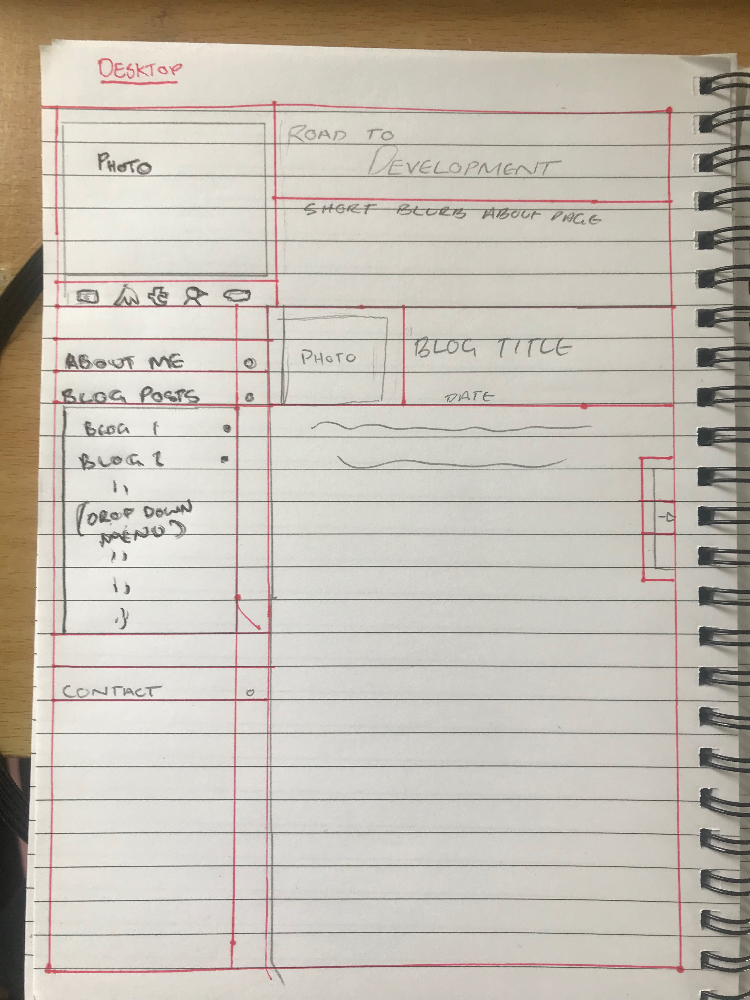
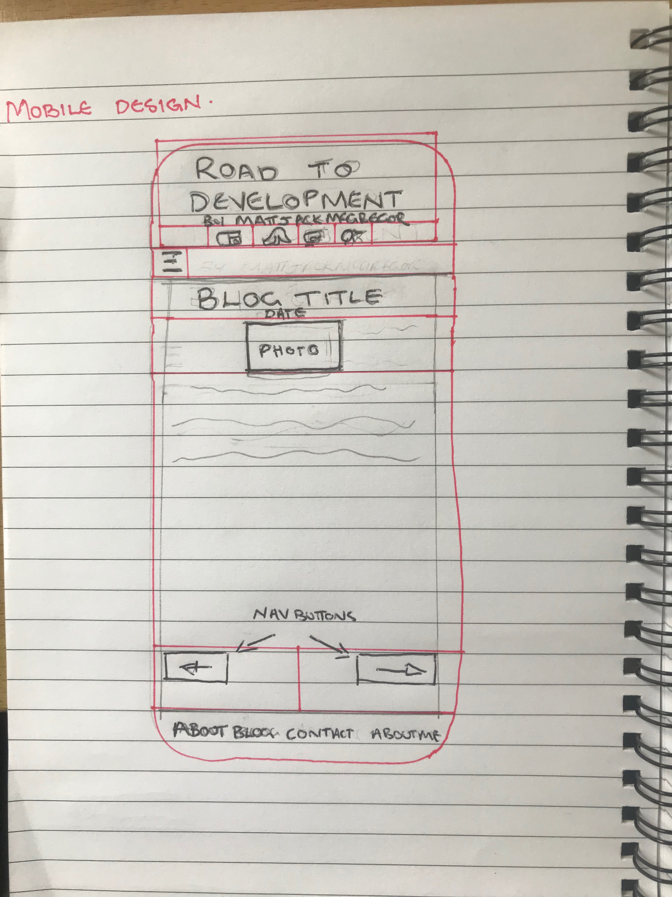

Design to Web
23.Feb.2018
- What is a responsive site, and why responsiveness is important?
A site that has a responsive design is a site that can change the way it's displayed on devices with different sized screens.
Responsive design is an important part for the users experience when navigating and interacting with the site content. A responsive
design helps present the content in the best way possible according.
- What is mobile first design, and why it's important?
Mobile first design is when the inital template is designed for optimum mobile display first off the bat. This is a prefered way of development
as it is cleaner and easier to add code for bigger screens rather then loading a whole lot of code and then taking it away.
- What are frameworks, and their pros and cons?
Frameworks are basically pre made template structures that you can use when designing a site. They have their own unique set of rules/ways they work and interact.
Pros of frameworks are that it is a efficient and fast way to build a site saving time and brain power trying to create your own.
Cons are that you can sometimes be limited to what you can do and be restricted by the framework it's self. Also you are loading some code that isn't being used which
is a waste of power and load time.
- What is a wireframe and why we use it?
A wireframe is basically a plan/sketch/drawing of the layout of your site and how you want it structured. A real simple basic outline of things.


I wanted to have the main blog window (the one this writing is in) to be its own html inside of the whole page. So the rest of the page was static and when you load the pages fro
the navagation bar on the left that only this window would change and load and not the whole page. But I think you need javascript to do that or I don't really know but I'll learn it soon :)